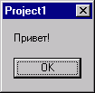
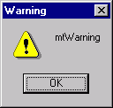
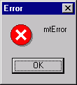
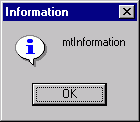
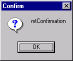
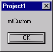
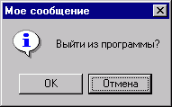

Функции вызова диалоговых окон с сообщениями
Сообщения присутствуют повсюду: когда вы пытаетесь
закрыть не сохраненный проект, при появлении ошибки, когда программа сообщает о
некотором событии.
Можно разделить все программные сообщения на: информационные сообщения
(Загрузка данных с дискеты завершена) , предупреждающие сообщения
(Файл модифицирован. Сохранить?), сообщения об ошибке (Файл
данных программы не найден. Требуется переустановка программы).
Ради экономии времени, вы можете всегда, из любого места программы показать
пользователю, к примеру, следующее сообщение:

В чем же заключается экономия времени и экономия текста кода программы. Такое
сообщение выводится на экран одной строчкой: ShowMessage('Привет!');
Тип данных в скобках - String.
На этой команде работа процедуры (не всей программы!) приостанавливается. Пока
пользователь не нажмет на кнопку Ok, работа с приложением становится
невозможным, т.е. нельзя добраться до окна, расположенного позади.
Т.е. это сообщение открывается модально.
Заголовок окна содержит в себе текст,
который отображен на панели задач. По умолчанию имеет название запускаемого EXE
файла.
Изменить название запущенной программы в панели задач можно в любом месте
программы с помощью команды:
Application.Title:='Название программы';
К примеру, вы обрабатываете довольно объемный размер данных (чтение файлов), и
хотите показывать процент выполнения задания прямо в панели задач (как это
сделано в программе DrWeb). Ведь пользователь не всегда сможет смотреть на ваш
10-минутный процесс обработки данных, а скорее всего переключится на другую,
менее трудоемкую операцию (карточный пасьянс), постоянно следя за процессом
обработки на панели задач.
Изначально, еще до запуска программы на выполнение, на этапе разработки, вы
можете это задать название программы в панели задач с помощью главного меню
delphi Project, дальше пункт Options..., в открывшемся
окне на вкладке Application указать в поле Title необходимую
строку. Эта строка и будет отображена в панели задач. При этом следует помнить,
что слишком длинная фраза в кнопке на панели задач полностью не будет показана.
При этом она будет обрезана троеточием, а для того, чтобы узнать полное
название запущенной программы, нужно будет подвести мышку (всплывающая подсказка
Hint вам покажет полное название).
Недостатком команды вывода строки ShowMessage является то, что нельзя
отдельно от названия программы в панели задач, менять заголовок окошка, нельзя
получить иконку в окошке, нельзя отображать другие кнопки.
В Delphi есть функция отображения окна сообщения. Звучит оно так:
MessageDLG(ТЕКСТ_СООБЩЕНИЯ,ТИП_СООБЩЕНИЯ,КНОПКИ,ИНДЕКС_ПОМОЩИ);
Поскольку нашим программам мы пока не
пишем дополнительно файлов справки, поэтому ИНДЕКС_ПОМОЩИ у нас всегда будет
нулевым. Для информации скажу, что если у нас таковой файл имеется, то можно в
таком сообщении сделать кнопку Help. Если пользователь озадачен
вопросом или сообщением, то может, не закрывая этого окна, узнать подробнее о
дальнейших этапах работы при выборе того или иного пункта.
ТЕКСТ_СООБЩЕНИЯ - строковая величина. Как в предыдущей команде, сообщение
показывается внутри окна.
ТИП_СООБЩЕНИЯ - может принимать несколько значений. От этих значений зависит
содержимое заголовка и иконка в левом верхнем углу окна.
|
Тип сообщения |
Описание |
Вид |
|
mtWarning |
Можно использовать в предупреждающих сообщениях. Например, Вы действительно желаете удалить все данные с диска С: |
 |
|
|
Обычное окошко вывода сообщения об ошибки. Всем знаком его вид т.к. это наиболее частое окно в windows :) |
 |
|
mtInformation |
Какая-нибудь информация. Например, Не найден файл настройки, создается заново |
 |
|
mtConfirmation |
Это запрос. Запрос на сохранение перед выходом, спрашивает перед удалением параметра, и т.п. На ваш собственный вкус |
 |
|
mtCustom |
Это сообщение полностью аналогично ShowMessage |
 |
Кнопки - содержит в себе массив кнопок,
которые следует показывать в сообщении.
Даю перечень кнопок.
* mbYes
* mbNo
* mbOK
* mbCancel
* mbHelp
* mbAbort
* mbRetry
* mbIgnore
* mbAll
Рассказывать про каждую кнопку не буду, т.к. все равно ее название нельзя
сменить. А если вам англоязычный термин непонятен, то тогда какой смысл ее
применять :).
Массив кнопок задается в квадратных кавычках []. Например, нам надо задать три
кнопки Yes, No, Cancel. Это делается так [mbYes,mbNo,mbCancel].
Поскольку кнопки в сообщении могут быть разные, то MessageDLG является
функцией. Она возвращает результат нажатой кнопки.
Соответственно указанным выше кнопкам результат может принимать следующие
значения
* mrNone - окно сообщения закрыто не с помощью кнопки (Alt+F4 или кнопкой
закрыть)
* mrAbort
* mrYes
* mrOk
* mrRetry
* mrNo
* mrCancel
* mrIgnore
* mrAll
Рассмотрим пример. Нам надо спросить у пользователя о дальнейших действиях
перед выходом из программы.
1. Сохранить файл.
2. Не сохранять файл.
3. Продолжить редактирование.
R:Word; //
переменная, в которой хранится результат
...
R:=MessageDLG('Сохранить файл перед выходом?',mtConfirmation,[mbYes,mbNo,mbCancel],0);
if R=mrYes then // если нажата кнопка Yes
begin
// сохраняем файл и завершаем программу
end;
if R=mrNo then // если нажата кнопка No
begin
// завершаем работу программы без сохранения
end;
if R=mrCancel then // если нажата кнопка Cancel
begin
// продолжаем работу без сохранения
end;
Мы рассмотрели команду MessageDLG. Это очень гибкая команда, есть много
достоинств, но есть один существенный недостаток - англоязычный интерфейс.
Следующая команда использует системные сообщения пользователю вашей
операционной системы. Т.е., если у вас установлена, например немецкая версия
windows, то кнопки будут иметь соответствующие названия на немецком языке.
Вот эта команда:
Первый параметр - указатель на владельца окна сообщения. Этот параметр вам пока
ничего не говорит, устанавливайте его в Handle (это ссылка на окно, откуда это
сообщение вызывается).
ТЕКСТ_СООБЩЕНИЯ и ЗАГОЛОВОК_ОКНА - имеют тип PChar, поэтому, во
избежание недоразумений и появления неизвестного рода ошибок, выдаваемых
компилятором, меняйте тип String в PChar на ходу. Например:
MessageBox(Handle,PChar('ТЕКСТ_СООБЩЕНИЯ'),PChar('ЗАГОЛОВОК_ОКНА'),...
Это был перевод из одного типа строковой величины в другой тип.
Теперь поговорим о немного сложном параметре ТИП_СООБЩЕНИЯ. Он включает в себя
иконку и кнопки.
Кнопки:
* MB_ABORTRETRYIGNORE - кнопки Прервать,
Повторить, Пропустить.
* MB_OK - кнопка Ok.
* MB_OKCANCEL - кнопки Ok, Отмена.
* MB_RETRYCANCEL - кнопки Повторить и Отмена.
* MB_YESNO - две кнопки Да и Нет.
* MB_YESNOCANCEL - кнопки Да, Нет,
Отмена.
Для того, чтобы отобразить иконку, нужно указать:
* MB_ICONEXCLAMATION
* MB_ICONWARNING
* MB_ICONINFORMATION
* MB_ICONASTERISK
* MB_ICONQUESTION
* MB_ICONSTOP
* MB_ICONERROR
* MB_ICONHAND
Если у вас в сообщении несколько кнопок, а по умолчанию нужно выбрать
определенную, то такая кнопка задается:
MB_DEFBUTTON1 - где последняя цифра указывает номер кнопки, выбранной по
умолчанию. Это свойство может быть полезным, например, чтобы обезопасить данные
от случайного уничтожения. Удалить файл?. Две кнопки -
Да, Нет. По умолчанию мы программно выбираем вторую
кнопку. Если пользователь сразу нажал на Enter, не осознавая своего поступка,
можно сказать по привычке, то ничего страшного не произойдет.
Как же указать параметры иконки, кнопок, кнопки по умолчанию в одном параметре ТИП_СООБЩЕНИЯ.
Очень просто. Простым знаком +
Например:
MessageBox(Handle,PChar('Выйти
из программы?'),PChar('Мое
сообщение'),MB_ICONINFORMATION+MB_OKCANCEL+MB_DEFBUTTON2);

Выглядит это в программе так, как показано на рисунке:
Итак, MessageBox можно считать идеальной командой вывода сообщения
пользователю, которая будет совместима со всеми языковыми версиями windows.
Контроль нажатия на кнопку в MessageBox мы осуществляем аналогично MessageDLG,
только возвращаемая величина может принимать следующие значение (соответственно
нажатой кнопке):
* IDABORT
* IDCANCEL
* IDIGNORE
* IDNO
* IDOK
* IDRETRY
* IDYES